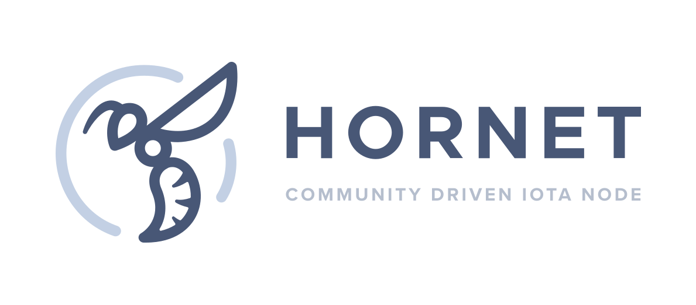

Welcome to HORNET
The IOTA community node

HORNET is a powerful, community driven IOTA fullnode software written in Go. It is easy to install and runs on low-end devices like the Raspberry Pi 4.
Notes
- Please open a new issue if you detect an error or crash (or submit a PR if you have already fixed it).
- The issue section is not a support section, if you have questions about HORNET please post them in the
#hornetchannel (official iota discord server).
Table of contents
Documentation
Please have a look into our HORNET wiki
Autopeering
WARNING: The autopeering plugin will disclose your public IP address to possibly all nodes and entry points. Please disable the plugin if you do not want this to happen!
The autopeering plugin is still in an early state. We recommend to add 1-2 static peers as well.
If you want to disable autopeering, you can do so by adding it to the disablePlugins in your config.json:
"node": {
"disablePlugins": ["Autopeering"],
"enablePlugins": []
},
Contributing
- See CONTRIBUTING
Installation
Binary
- Download the latest release for your system (e.g.
HORNET-x.x.x_Linux_ARM64.tar.gzfor the Raspberry Pi 4) - Extract the files in a folder of your choice
- Add neighbors to the
peering.jsonfile (optional) - Run HORNET:
./hornet -c config
APT
wget -qO - https://ppa.hornet.zone/pubkey.txt | sudo apt-key add -
sudo sh -c 'echo "deb http://ppa.hornet.zone stable main" >> /etc/apt/sources.list.d/hornet.list'
sudo apt update
sudo apt install hornet
Tutorial: Install HORNET with APT
Plugins
HORNETs functionality is extended by plugins. Available plugins are listed here.
Docker
Pull HORNET from Docker Hub
Build a Docker image
- See Docker
Tutorials
Community Tutorials
This is a small tutorial on how to build HORNET.
Note: This tutorial assumes that you are using Ubuntu. The setup and build process may differ on other OS.
Preparations
- Install Go1.14:
sudo add-apt-repository ppa:longsleep/golang-backports sudo apt update sudo apt install golang-go - Check if Go is installed correctly:
The output should be something like this:go versiongo version go1.14 linux/amd64 - Install git (if not already done):
sudo apt install git - Install
build-essential(optional, needed for optimized PoW)sudo apt install build-essential
Build HORNET
- Clone HORNET with:
git clone https://github.com/gohornet/hornet.git - Change to the cloned
hornetdirectorycd hornet - Checkout the develop branch to build HORNET for Chrysalis (IOTA 1.5) (optional if you want to build the latest HORNET release for the current Network (IOTA 1.0), please use the
masterbranch):git checkout develop - Build HORNET
without optimized PoW:
or with optimized PoW (only available for newer x86_64 (amd64) systems):go buildgo build -tags=pow_avx - Done, now you should be able to start HORNET.
Test, if the build was successful:
If HORNET prints out its version, the build was successful../hornet --version
This is a small tutorial on how to build HORNET.
Note: This tutorial assumes that you have prebuilt HORNET. Learn how to build HORNET here
Change to the alphanet directory and execute the
cd alphanet
./run_2nd.sh
Now you should see this and some more logs:
██╗ ██╗ ██████╗ ██████╗ ███╗ ██╗███████╗████████╗
██║ ██║██╔═══██╗██╔══██╗████╗ ██║██╔════╝╚══██╔══╝
███████║██║ ██║██████╔╝██╔██╗ ██║█████╗ ██║
██╔══██║██║ ██║██╔══██╗██║╚██╗██║██╔══╝ ██║
██║ ██║╚██████╔╝██║ ██║██║ ╚████║███████╗ ██║
╚═╝ ╚═╝ ╚═════╝ ╚═╝ ╚═╝╚═╝ ╚═══╝╚══════╝ ╚═╝
v0.6.0-alpha
API Reference
Troubleshooting
Check our Frequently asked questions.
If your questions is no covered, feel free to ask in the #hornet channel (official iota discord server).
Something went wrong?
- Please open a new issue if you detect an error or crash (or submit a PR if you have already fixed it).
FAQ
What is HORNET?
HORNET is a community driven IOTA fullnode. It is written in Go which makes it lightweight and fast.
Does HORNET run on the Mainnet?
Yes, HORNET gets actively tested within the IOTA Mainnet.
Can I run HORNET on a Raspberry Pi?
Yes, you can run HORNET on a Raspberry Pi 4B with an external SSD. But we recommend to run HORNET on a more powerful device.
I have difficulty setting up HORNET. Where can I get help?
Our community loves helping you. Just ask your questions in the #hornet channel on the official IOTA Discord Server
What are the spammer settings for?
You can enable the integrated spammer by adding "Spammer" to "enableplugins" (comma separated).
These settings are available:
"spammer": {
"address": "HORNET99INTEGRATED99SPAMMER999999999999999999999999999999999999999999999999999999",
"depth": 3,
"message": "Spamming with HORNET tipselect",
"tag": "HORNET99INTEGRATED99SPAMMER",
"tpsratelimit": 0.1,
"workers": 1
}
address: The address you want to use (you don't have to own it as it's zero value spam)depth: Depth for tip selection. Set it to3if you don't know what this is for.message: The message you want to send with your spam (keep it short)tag: The tag you want to use (can not be longer than 27 trytes [A-Z, 9])tpsratelimit: Defines how many transactions (TX) the spammer should try to send (e.g.0.1stands for 0.1 TX per second --> 1 TX every 10 seconds. NOTE: the maximumtpsratelimitis limited by your used hardware. Start with a lower value and slightly increase it, watch your CPU usage.workers: Number of workers the spammer spins up --> Number of CPU cores you want to use (you should not use all available cores)
Can I contribute?
Of course, you are very welcome! Just send a PR or offer your help in the #hornet channel on the official IOTA Discord Server
I found a bug, what should I do?
Please open a new issue. We'll have a look at your bug report as soon as possible.
I'm missing feature xyz. Can you add it?
Please open a new feature request. We cannot assure that the feature will actually be implemented. Pull requests are very welcome!
Contributing
By participating to this project, you agree to abide our code of conduct.
How to contribute
Basic setup
HORNET is written in Go.
Prerequisites:
- Setup Go 1.14+
- Fork
HORNET - Test your setup by building
HORNET:go build
Make your changes
Make your changes and test them sufficiently.
Create a commit
Commit messages should be well formatted.
You can use this as a guide: Conventional Commits
Submit a pull request
Push your branch to your HORNET fork and open a pull request to the
develop branch.
Contributor Covenant Code of Conduct
Our Pledge
In the interest of fostering an open and welcoming environment, we as contributors and maintainers pledge to make participation in our project and our community a harassment-free experience for everyone, regardless of age, body size, disability, ethnicity, sex characteristics, gender identity and expression, level of experience, education, socio-economic status, nationality, personal appearance, race, religion, or sexual identity and orientation.
Our Standards
Examples of behavior that contributes to creating a positive environment include:
- Using welcoming and inclusive language
- Being respectful of differing viewpoints and experiences
- Gracefully accepting constructive criticism
- Focusing on what is best for the community
- Showing empathy towards other community members
Examples of unacceptable behavior by participants include:
- The use of sexualized language or imagery and unwelcome sexual attention or advances
- Trolling, insulting/derogatory comments, and personal or political attacks
- Public or private harassment
- Publishing others' private information, such as a physical or electronic address, without explicit permission
- Other conduct which could reasonably be considered inappropriate in a professional setting
Our Responsibilities
Project maintainers are responsible for clarifying the standards of acceptable behavior and are expected to take appropriate and fair corrective action in response to any instances of unacceptable behavior.
Project maintainers have the right and responsibility to remove, edit, or reject comments, commits, code, wiki edits, issues, and other contributions that are not aligned to this Code of Conduct, or to ban temporarily or permanently any contributor for other behaviors that they deem inappropriate, threatening, offensive, or harmful.
Scope
This Code of Conduct applies within all project spaces, and it also applies when an individual is representing the project or its community in public spaces. Examples of representing a project or community include using an official project e-mail address, posting via an official social media account, or acting as an appointed representative at an online or offline event. Representation of a project may be further defined and clarified by project maintainers.
Enforcement
Instances of abusive, harassing, or otherwise unacceptable behavior may be reported by contacting the project team at hornet@iotmod.de. All complaints will be reviewed and investigated and will result in a response that is deemed necessary and appropriate to the circumstances. The project team is obligated to maintain confidentiality with regard to the reporter of an incident. Further details of specific enforcement policies may be posted separately.
Project maintainers who do not follow or enforce the Code of Conduct in good faith may face temporary or permanent repercussions as determined by other members of the project's leadership.
Attribution
This Code of Conduct is adapted from the Contributor Covenant, version 1.4, available at http://contributor-covenant.org/version/1/4